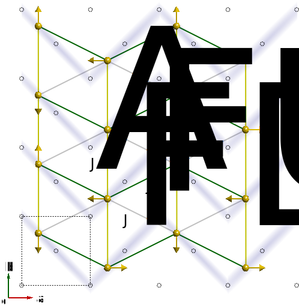

Pr(Ca0.9Sr0.1)2Mn2O7: An example of a "real world" problem in SpinW
A tutorial on how to implement a complex model in SpinW
Perovskite magnanites are a class of material which have a square lattice of Mn atoms, each in an O6 octahedron.
In undoped materials, the magnetic ion is usually Mn3+ (d4) which generally undergoes a Jahn-Teller distortion to lift the degeneracy of the eg electron.
This may cause orbital ordering, as the electron in the eg levels may then either occupy only the dz2-r2 or the dx2-y2 orbitals.
In addition, when the material is doped with holes, some of the Mn3+ become Mn4+ yielding a mixed-valent material, which may show charge ordering of the Mn3+ and Mn4+ ions.
This may lead to ferromagnetic double exchange between neighbouring ions with different valence states which would compete with the antiferromagnetic superexchange which is normally expected in the single-valent case.
The most famous phenomena to have emerge from this mix of different types of physics is colossal magnetoresistance, the exact theory of which is still not fully worked out
Pr(Ca0.9Sr0.1)2Mn2O7 is a half-doped (equal number of Mn3+ and Mn4+ ions) bi-layer manganite.
It exhibits a simultaneous charge and orbital ordering at TCO=370 K, and antiferromagnetic ordering at TN=153 K.
There was some uncertainty as to the nature of the antiferromagnetic charged and orbital ordered ground state:
This is the classic model of a half-doped manganite.
The extra hole produces a checker-board charge ordering with Mn3+ ions on half the sites and Mn4+ on the other half
The Mn4+ have each electron on one of the t2g orbitals and show no orbital ordering
The Mn3+ have one electron in one of the eg orbitals (dz2-r2).
This orbital has its lobes oriented towards two neighbouring Mn4+ and the electron is free to hop between the Mn spins.
This hopping occurs best when the neighbouring spins are parallel (ferromagnetically aligned) - this is the double-exchange mechanism
Because the single electron are itinerant along the ferromagnetic chains, it is plausible that they can mediate a longer range ferromagnetic exchange, but only within one chain. Hence JF2 and JF3 are along only for some of the bonds, and break the translational symmetry of the Amam unit cell.

A newer alternative proposal based on single crystal neutron diffraction data
Instead of the checkerboard charge order, pairs of Mn ions form strongly bound Mn27+ pairs and share a single eg electron
This bound Zener Polaron may be treated as a single $S=\frac{7}{2}$ spin for spin wave theory calculations.
There is an antiferromagnetic coupling between anti-parallel polarons JA
And two ferromagnetic couplings between perpendicularly oriented polarons depending on whether it is within a zig-zag or between zig-zags